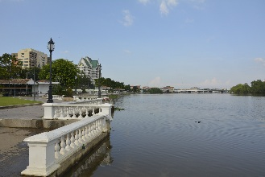
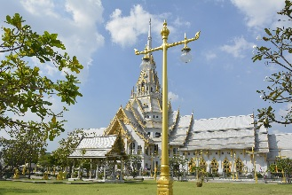
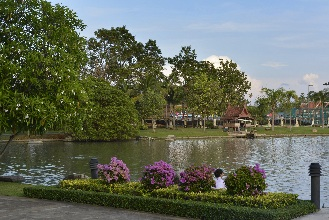

Chachoengsao (ฉะเชิงเทรา)
 Chachoengsao, também conhecida como Paet Riu (em referência à um peixe encontrado na região), fica às margens do rio Bang Pakong e é a capital da província de mesmo nome.Seu nome vem de uma palavra khmer que significa "canal profundo".
A cidade foi estabelecida em 1549 durante o reinado de Maha Chakkrapat de Ayutthaya, e originalmente era um centro de recrutamento militar.
Phraya Lawaek, o rei khmer, alistou tailandeses de várias cidades, incluindo Chachoengsao, para fazerem parte de seu exército.
Até o reinado de Rama V, que mudou os sistemas de administração, Chachoengsao era uma cidade no Círculo de Prachin Buri.
Em 1916, sua definição mudou de cidade para província, e atualmente ambas existem, a cidade e a província.
A cidade fica há cerca de 50km a leste de Bangcoc, e em 2006 tinha uma população de 60.893 habitantes.
Como chegar em Chachoengsao
De carro: desde Bangcoc, há 3 rotas: 1-) Pegue a Rodovia 304 (Bangcoc-Min Buri-Chachoengsao), percorrendo 75km. 2-) Pegue a Rodovia 34 (Bang Na-Trat) e acesse a Rodovia 314 (Bang Pakong-Chachoengsao), percorrendo 90 km. 3-) Pegue a Rodovia 3 (antes de Samut Prakan e Bang Pakong) e acesse a Rodovia 314, percorrendo 100 km.De ônibus: há um serviço com ar condicionado saindo do Terminal Norte na rua Kamphaeng Phet II, das 5:20 às 18:00, com ônibus a cada 30 minutos. A viagem leva em torno de 1 hora e 20 minutos. Além desse serviço, é possível viajar desde a Estação Leste (Ekkamai). Há ônibus das 5:00 às 21:30.
De trem: 13 ônibus expresso ou normais (incluindo 2 com ar condicionado) saem diariamente da Estação Hua Lamphong, em Bangcoc. Os vagões normais (de 3ª classe, sem ar condicionado) podem ficar extremamente lotados nos horários de pico, e a passagem pode não garantir um assento, então evite esses horários. Caso realmente tenha que viajar nesse horário, chegue cedo para garantir seu lugar.
O primeiro trem sai às 5:55 e o último às 18:25. Para voltar, o primeiro sai às 5:45 e o último às 20:05. Para mais informações, acesse www.railway.co.th.
Se locomovendo pela cidade
Não há muitos ônibus na cidade, e os principais meios de transporte são os songthaews e os tuk-tuks.Com songthaew: songthaews são pick-ups cobertas e com 2 bancos na parte traseira (songthaew significa 2 bancos em tailandês). São vistos por toda parte na cidade, e para subir em um deles apenas levante seu braço e olhe para o motorista. Depois, quando quiser parar em algum ponto da rota, puxe a buzina (no teto). O motorista para, você desce e paga pela janela. A passagem custa ฿$ 10. As linhas são identificadas por cores: a maioria delas começa ou termina ou ao menos passa pela área do mercado principal.
Amarelo: desde/até as estações de trem e ônibus, pela rodovia principal Sri Sothorn.
Branco: do mercado central até o bairro de Bang Kaew.
Azul: da rua de frente ao Wat Sothorn ao mercado central.
Vermelho: desde o mercado, ao lado do rio, pela área da Don Thong School nos horários de pico, e além em outros horários.
Laranja: desde o mercado, ao longo do rio e seguindo até a Rodovia.
Com tuk-tuk: ao contrário de alguns motoristas de tuk-tuk de Bangcoc, os de Chachoengsao não tentam te enrolar. Os tuk-tuks rodam ao redor das estações de trem e ônibus, dos 2 principais supermercados e da área do mercado central. Poucos falam inglês, então o melhor é você saber o caminho e dar as direções em tailandês ou com gestos (tipo, "esquerda, direita, reto, esquerda"), ou ter o endereço escrito em tailandês. A tarifa básica começa nos ฿$ 40, e geralmente não passa dos ฿$ 70 (a não ser que seja uma distância muito grande ou uma corrida de ida e volta).
As atrações de Chachoengsao
Wat Sothon Wararam Worawihan
Tem a fama de ser o maior templo em atividade no mundo, embora isso não seja confirmado.
Milhares de tailandeses vão ao templo todas as semanas, especialmente durante os finais de semana, quando se forma um grande mercado próximo ao templo. Desde cedo as primeiras barracas são montadas para atender os milhares de fiéis que visitam o local.
Milhares de tailandeses vão ao templo todas as semanas, especialmente durante os finais de semana, quando se forma um grande mercado próximo ao templo. Desde cedo as primeiras barracas são montadas para atender os milhares de fiéis que visitam o local.

Local: rua Thep Khunakon, bairro de Na Mueang.
☎: +66 38 511 666. Voltar à lista
☎: +66 38 511 666. Voltar à lista
Parque Suan Somdet Phra Sinakkharin
Parque dedicado à memória da mãe do rei Rama IX. Fica de frente à prefeitura, próximo ao centro da cidade.
No meio do parque há um grande lago cercado por um caminho e muitas árvores.
É bastante popular entre os moradores locais.
No meio do parque há um grande lago cercado por um caminho e muitas árvores.
É bastante popular entre os moradores locais.

Coordenadas GPS: 13°41'16.44"N - 101°4'2.64"L.
Voltar à lista